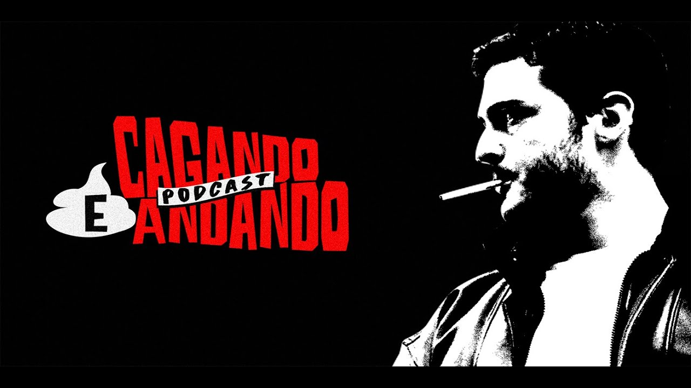
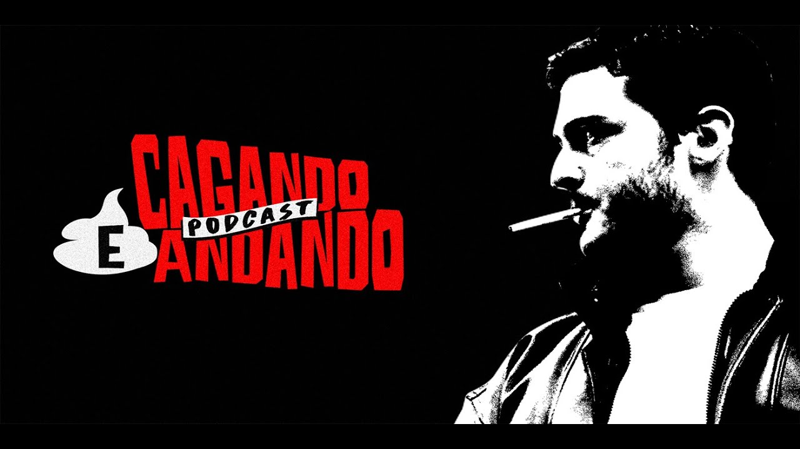

Desinformação - Segundas e quartas AO VIVO às 9h
Os dois maiores ignorantes deste país, Arthur Petry e Tiago Carvalho, tentam entender as notícias da semana baseados em opiniões estritamente retiradas do CU de ambos.
Saco Cheio - Todas às sextas-feiras
O programa é para ouvintes que não procuram cultura, informação ou opiniões inteligentes. Durante uma hora e meia Arthur Petry reduz o mundo inteiro ao seu próprio umbigo, interpretando tudo de forma egoísta, ignorante e burra.
Cagando e Andando - Todas às quintas-feiras
Um programa PAUTADO nos sentimentos de arrependimento e ressentimento. Baseado apenas em intuições infantilizadas, Tiago Carvalho faz observações sobre a existência e explica minuciosamente como as coisas deveriam ser. Além disso, ele conta histórias de sua vida, muitas vezes desastrosas, causadas por medo, procrastinação e PREGUIÇA. Veja em ação o cérebro de alguém que não tem compromisso com rigorosamente nada e se orgulha e se arrepende disso ao mesmo tempo.

 
